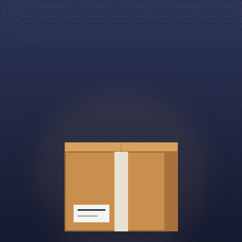

Frame-by-frame animation rendered in Python (PIL), assembled and palette-crunched to Slack's specs, then machine-validated: dimensions, frame rate, and file size all pass. A package opens; a little wisdom gets out.

:wisdom-unboxed:
Both files were checked with the toolkit's validator — passes: true for message and emoji constraints. Drop the small one into your workspace's custom emoji and react to good questions with it.
← ALL REELS